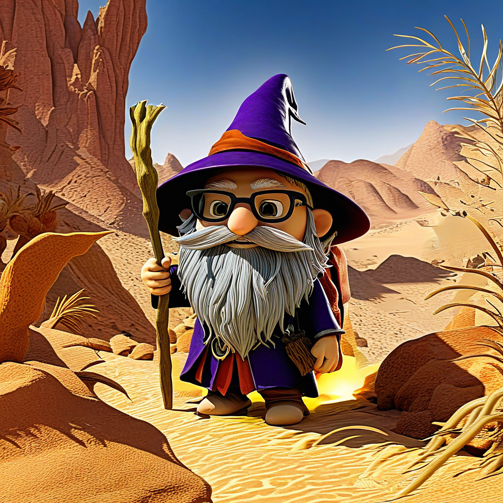
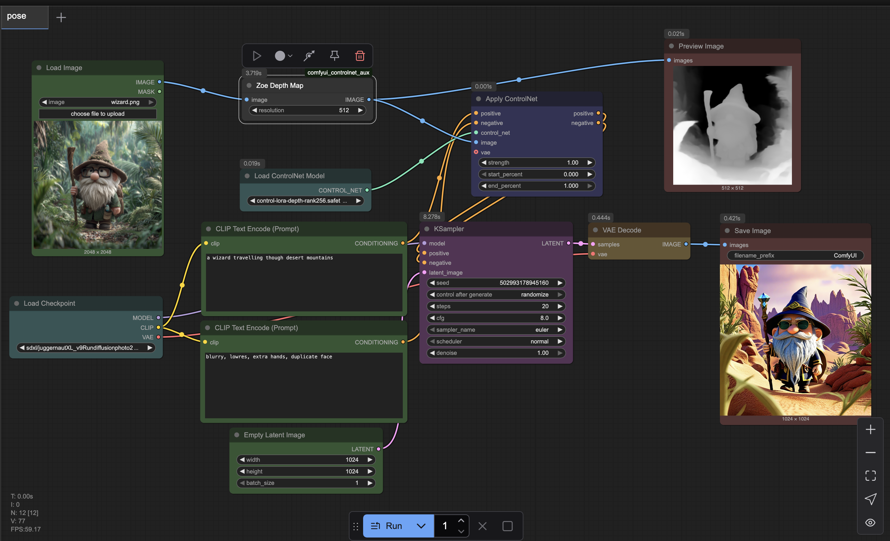

Beyond Img2Img: How to Master Pose Replication with ControlNet Depth Maps in ComfyUI
You've finally rendered the perfect character, in the perfect pose. The lighting is dramatic, the details are crisp... but they're in the wrong location. If you've ever tried to solve this with img2img, you know the frustration. The old background bleeds through, the pose shifts, and you spend hours fighting with a denoise slider.
There is a better way. A much, much better way.
Welcome to the world of ControlNet. In this guide, you will learn how to use a ControlNet Depth Map to extract the precise 3D pose from any source image and apply it to a completely new, AI-generated scene. This is the professional solution for consistency and control. By the end, you'll be able to move any subject to any location while preserving its pose with pixel-perfect accuracy.
Prerequisites
- ComfyUI: A working installation. I recommend using the ComfyUI-Manager for easy installation of custom nodes.
- AI Checkpoint Model: An SDXL or SD1.5 model. The example uses
sdxlJuggernaut_v9. - ControlNet Model: You need a ControlNet model trained on depth maps. Search for
control_v11p_sd15_depthfor SD1.5 or an SDXL Depth ControlNet. Download the.safetensorsfile and place it in yourComfyUI/models/controlnetdirectory. - Custom Node: The Zoe Depth Map preprocessor. You can easily install this using the ComfyUI-Manager.
The Core Concept: What is ControlNet?
Think of your main AI model (Juggernaut, etc.) as a fantastically talented but free-spirited painter. A text prompt is your suggestion, but the artist has creative freedom.
ControlNet is the strict art director. It holds up a non-negotiable blueprint (in our case, a depth map) and tells the artist, "I don't care what you paint—a desert, a city, a spaceship—but it must conform to this exact 3D structure."
Example Transformation
Input Image

Output Image
The Workflow: Step-by-Step Construction
Step 1: The Blueprint - Create the Depth Map
First, load your source image using a Load Image node. Connect its IMAGE output to the image input of a Zoe Depth Map node. This preprocessor analyzes the image and generates a new image where brightness corresponds to distance from the camera. You can preview this map to see the 3D structure it has captured.
Step 2: Load Your Control Tools
You need two key models:
- Load Checkpoint: This is your main "artist" model.
- Load ControlNet Model: Select the depth ControlNet file you downloaded earlier.
Step 3: Apply the ControlNet Guidance
This is the central hub of the technique. The Apply ControlNet node takes three critical inputs:
- conditioning: This comes from your
CLIP Text Encode (Prompt)nodes. This is what you want to see in the new scene. - control_net: This comes from your
Load ControlNet Modelnode. This is the "director." - image: This comes from your
Zoe Depth Mapnode. This is the "blueprint."
The node then outputs a new, modified conditioning signal that has the ControlNet's rules baked into it.
Step 4: The Generation - KSampler with a Twist
Set up your KSampler as usual, but with two crucial differences:
- Latent Image: Connect an Empty Latent Image node to the
latent_imageinput. We are creating a 100% new image from noise. - Denoise: Set the denoise slider to 1.0. This tells the sampler to completely replace the noise, trusting the ControlNet-infused conditioning to guide the entire process.
Step 5: Decode and View
Connect the output from the KSampler to a VAE Decode and Save Image node to see your final, perfectly posed result.
Fine-Tuning and Troubleshooting
- Pose isn't accurate enough? In the
Apply ControlNetnode, increase thestrengthparameter closer to 1.0. This makes the "director" even stricter. - Weird artifacts in the output? Ensure your ControlNet model version matches your checkpoint version (e.g., an SD1.5 ControlNet for an SD1.5 checkpoint).
Your Turn to Create
You have now mastered a technique that separates subject from scene. Take a photo of yourself and place yourself on the moon. Take a character from your favorite game and put them in a historical painting. The creative possibilities are endless.
Share your best "re-locations" in the comments below or tag me on social media! I will feature the most creative examples.
Next Steps
This is just one type of ControlNet. Now that you understand the principle, you're ready to explore ControlNet for Canny (to copy edges), ControlNet for Scribble (to turn doodles into masterpieces), and ControlNet for OpenPose (to use stick-figure skeletons as guides).